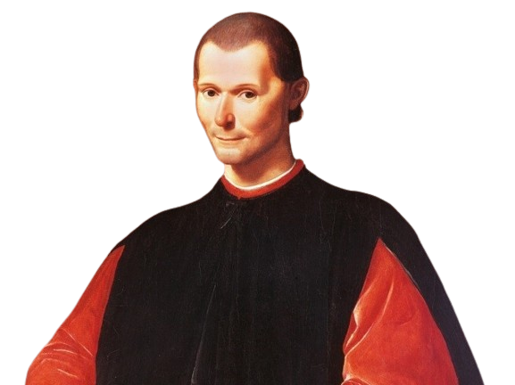
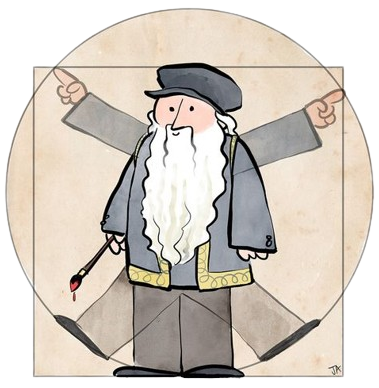

☭ Frases de Marx ☭
☭ Proletários de todos os países, uni-vos. ☭
O filósofo e revolucionário socialista alemão Karl Marx é o precursor de ideias políticas e econômicas que mudaram o mundo, e até hoje influencia a sociedade.
 Veja mais frases
Veja mais frases

☭ Proletários de todos os países, uni-vos. ☭
O filósofo e revolucionário socialista alemão Karl Marx é o precursor de ideias políticas e econômicas que mudaram o mundo, e até hoje influencia a sociedade.
Veja mais frases
☭ Os que no regime burguês trabalham não lucram e os que lucram não trabalham. ☭
Junto com Karl Marx fundou o chamado socialismo científico ou marxismo.
Veja mais frases☭ A teoria sem a prática de nada vale, a prática sem a teoria é cega. ☭
Princiapal lider da Revolução Russa
Veja mais frases✠ Melhor ser temido do que ser amado ✠
É reconhecido como fundador do pensamento e da ciência política moderna, pelo fato de ter escrito sobre o Estado e o governo como realmente são, e não como deveriam ser.
 Veja mais frases✠ Não se pode ensinar nada a um homem; só é possivel ajudá-lo a encontrar a coisa dentro de si. ✠
Frequentemente é referenciado como "pai da astronomia observacional", "pai da física moderna", "pai do método científico" e "pai da ciência moderna".
Veja mais frases✠ Quando eu pensar que aprendi a viver, terei aprendido a morrer. ✠
Uma das figuras mais importantes do Alto Renascimento, que se destacou como cientista, matemático, engenheiro, inventor, anatomista, pintor, escultor, arquiteto, botânico, poeta e músico.
 Veja mais frases